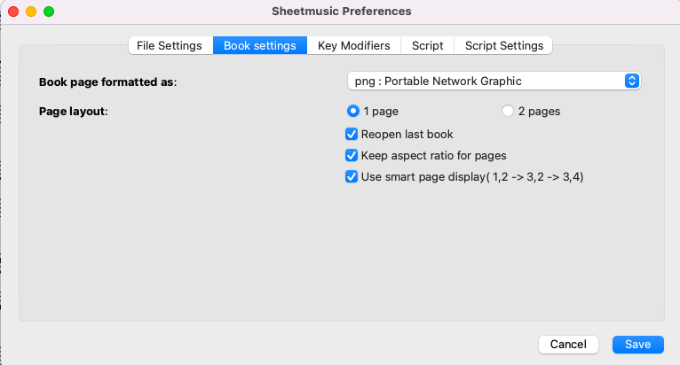
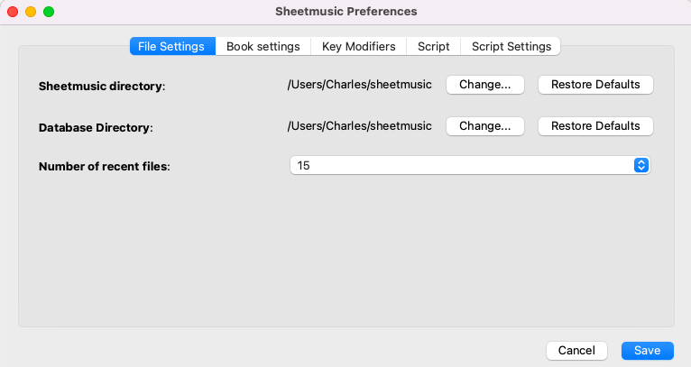
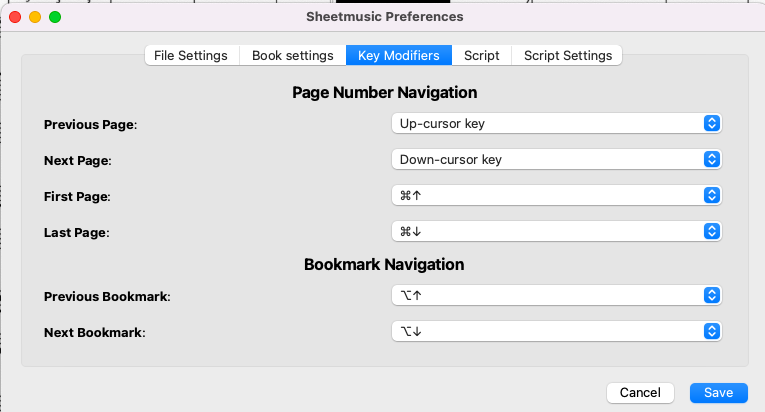
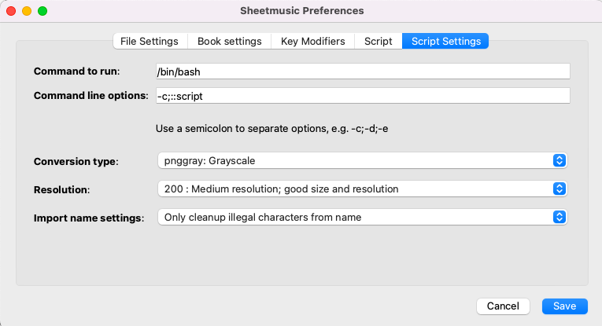
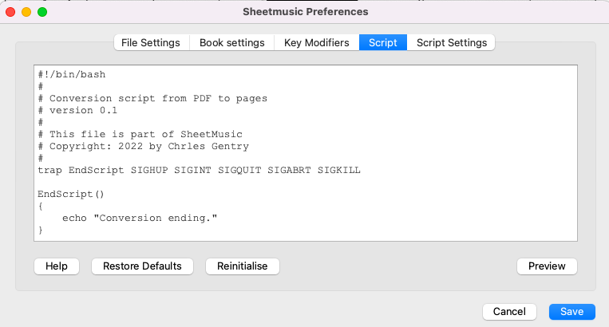

Preferences are global to all books and provides important setting and default settings for books. A book can have some specific setting stored for it, such as one or two page display. All settings are stored in an SQLITE3 database in the sheet music directory.




